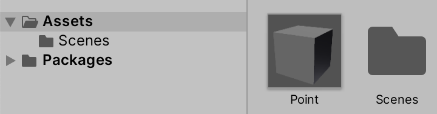
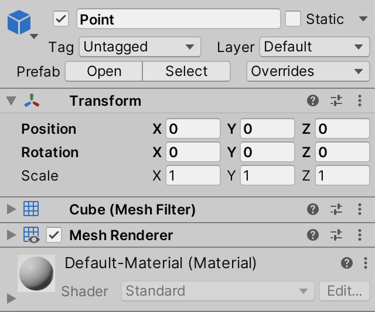
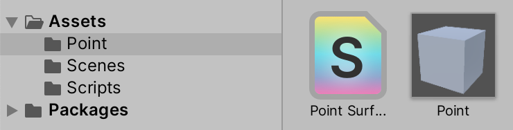
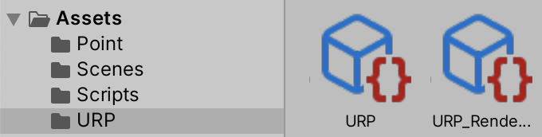
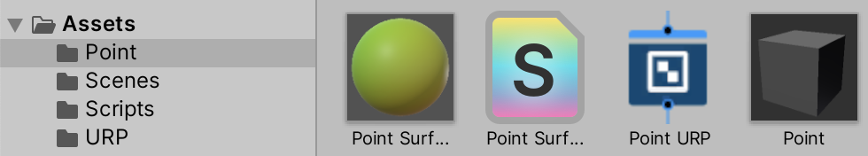

Building a Graph
Visualizing Math
- Create a prefab.
- Instantiate multiple cubes.
- Show a mathematical function.
- Create a surface shader and shader graph.
- Animate the graph.
This is the second tutorial in a series about learning the basics of working with Unity. This time we'll use game objects to build a graph, so we can show mathematical formulas. We'll also make the function time-dependent, creating an animating graph.
This tutorial is made with Unity 2020.3.6f1.
Creating a Line of Cubes
A good understanding of mathematics is essential when programming. At its most fundamental level math is the manipulation of symbols that represent numbers. Solving an equation boils down to rewriting one set of symbols so it becomes another—usually shorter—set of symbols. The rules of mathematics dictate how this rewriting can be done.
For example, we have the function `f(x)=x+1`. We can substitute a number for its `x` parameter, say 3. That leads to `f(3)=3+1=4`. We provided 3 as an input argument and ended up with 4 as the output. We can say that the function maps 3 to 4. A shorter way to write this would be as an input-output pair, like (3,4). We can create many pairs of the form `(x,f(x))`, for example (5,6) and (8,9) and (1,2) and (6,7). But it is easier to understand the function when we order the pairs by the input number. (1,2) and (2,3) and (3,4) and so on.
The function `f(x)=x+1` is easy to understand. `f(x)=(x-1)^4+5x^3-8x^2+3x` is harder. We could write down a few input-output pairs, but that likely won't give us a good grasp of the mapping it represents. We're going to need many points, close together. That will end up as a sea of numbers, which are hard to parse. Instead, we could interpret the pairs as two-dimensional coordinates of the form `[[x],[f(x)]]`. This is a 2D vector where the top number represents the horizontal coordinate, on the X axis, and the bottom number represents the vertical coordinate, on the Y axis. In other words, `y = f(x)`. We can plot these points on a surface. If we use enough points that are very close together we end up with a line. The result is a graph.
Looking at a graph can quickly give us an idea of how a function behaves. It's a handy tool, so let's create one in Unity. We'll start with a new project, as described in the first section of the previous tutorial.
Prefabs
Graphs are created by placing points at the appropriate coordinates. To do this, we need a 3D visualization of a point. We'll simply use Unity's default cube game object for this. Add one to the scene and name it Point. Remove its BoxCollider component, as we won't use physics.
We will be using a custom component to create many instances of this cube and position them correctly. In order to do this we'll turn the cube into a game object template. Drag the cube from the hierarchy window into the project window. This will create a new asset, known as a prefab. It is a pre-fabricated game object that exists in the project, not in a scene.

The game object that we used to create the prefab still exists in the scene, but is now a prefab instance. It has a blue icon in the hierarchy window and an arrow to its right side. The header of its inspector also indicates that it is a prefab and displays a few more controls. The position and rotation are now displayed with bold text, which indicates that the values of the instance override the prefab's. Any other changes that you make to the instance will also be indicated this way.

When selecting the prefab asset its inspector will show its root game object and a big button to open the prefab.
Clicking the Open Prefab button will make the scene window show a scene that contains nothing but the prefab's object hierarchy. You can also get there via the Open button of an instance, the right arrow next to an instance in the hierarchy window, or by double-clicking the asset in the project window. This is useful when a prefab has a complex hierarchy, but this isn't the case for our simple point prefab.
You can exit the prefab's scene via the arrow to the left of its name in the hierarchy window.
Prefabs are a handy way to configure game objects. If you change the prefab asset all instances of it in any scene are changed in the same way. For example, changing the prefab's scale will also change the scale of the cube that's still in the scene. However, each instance uses its own position and rotation. Also, game object instances can be modified, which overrides the prefab's values. Note that the relationship between prefab and instance is broken while in play mode.
We're going to use a script to create instances of the prefab, which means that we no longer need the prefab instance that is currently in the scene. So delete it, either via Edit / Delete, the indicated keyboard shortcut, or its context menu in the hierarchy window.
Graph Component
We need a C# script to generate a graph with our point prefab. Create one and name it Graph.
We begin with a simple class that extends MonoBehaviour so it can be used as a component for game objects. Give it a serializable field to hold a reference to a prefab for instantiating points, named pointPrefab. We'll need access to the Transform component to position the points, so make that the field's type.
using UnityEngine;
public class Graph : MonoBehaviour {
[SerializeField]
Transform pointPrefab;
}
Add an empty game object to the scene and name it Graph. Make sure that its position and rotation are zero, and that its scale is 1. Add our Graph component to this object. Then drag our prefab asset onto the Point Prefab field of the graph. It now holds a reference to the prefab's Transform component.
Instantiating Prefabs
Instantiating a game object is done via the Object.Instantiate method. This is a publicly available method of Unity's Object type, which Graph indirectly inherited by extending MonoBehaviour. The Instantiate method clones whatever Unity object is passed to it as an argument. In the case of a prefab, it will result in an instance being added to the current scene. Let's do this when our Graph component awakens.
public class Graph : MonoBehaviour {
[SerializeField]
Transform pointPrefab;
void Awake () {
Instantiate(pointPrefab);
}
}
If we enter play mode now a single instance of the Point prefab will be spawned at the world origin. Its name is the same as the prefab's, with (Clone) appended to it.
To place the point somewhere else we need to adjust the position of the instance. The Instantiate method gives us a reference to whatever it created. Because we gave it a reference to a Transform component, that's what we get in return. Let's keep track of it with a variable.
void Awake () {
Transform point = Instantiate(pointPrefab);
}
In the previous tutorial we rotated the clock arms by assigned a quaternion to the localRotation property of the pivot's Transform. Changing the position works the same way, except that we have to assign a 3D vector to the localPosition property instead.
3D vectors are created with the Vector3 struct type. For example, let's set the X coordinate of our point to 1, leaving its Y and Z coordinates at zero. Vector3 has a right property that gives us such a vector. Use it to set the point's position.
Transform point = Instantiate(pointPrefab); point.localPosition = Vector3.right;
When entering play mode now we still get one cube, just at a slightly different position. Let's instantiate a second one and place it an additional step to the right. This can be done by multiplying the right vector by 2. Repeat the instantiation and positioning, then add the multiplication to the new code.
void Awake () {
Transform point = Instantiate(pointPrefab);
point.localPosition = Vector3.right;
Transform point = Instantiate(pointPrefab);
point.localPosition = Vector3.right * 2f;
}
This code will produce a compiler error, because we attempt to define the point variable twice. If we want to use another variable we have to give it a different name. Alternatively, we reuse the variable that we already have. We don't need to hold on to a reference to the first point once we're done with it, so assign the new point to the same variable.
Transform point = Instantiate(pointPrefab); point.localPosition = Vector3.right;// Transform point = Instantiate(pointPrefab);point = Instantiate(pointPrefab); point.localPosition = Vector3.right * 2f;
Code Loops
Let's create more points, until we have ten. We could repeat the same code eight more times, but that would be very inefficient programming. Ideally, we only write the code for one point and instruct the program to execute it multiple times, with slight variation.
The while statement can be used to cause a block of code to repeat. Apply it to the first two statements of our method and remove the other statements.
void Awake () {
while {
Transform point = Instantiate(pointPrefab);
point.localPosition = Vector3.right;
}
// point = Instantiate(pointPrefab);
// point.localPosition = Vector3.right * 2f;
}
The while keyword must be followed by an expression within round brackets. The code block following while will only get executed if the expression evaluates as true. Afterwards, the program will loop back to the while statement. If at that point the expression again evaluates as true, the code block will be executed again. This repeats until the expression evaluates as false. Then the program skips the code block following the while statement and continues below it.
So we have to add an expression after while. We must be careful to make sure that the loop doesn't repeat forever. Infinite loops cause programs to get stuck, requiring manual termination by the user. The safest possible expression that compiles is simply false.
while (false) {
Transform point = Instantiate(pointPrefab);
point.localPosition = Vector3.right;
}
Limiting the loop can be done by keeping track of how many times we've repeated the code. We can use an integer variable to keep track of this. It's type is int. It will contain the iteration number of the loop, so let's name it i. It's initial value is zero. To be able to use it in the while expression it must be defined above it.
int i = 0;
while (false) {
Transform point = Instantiate(pointPrefab);
point.localPosition = Vector3.right;
}
Each iteration, increase the number by one, by setting it to itself plus 1.
int i = 0;
while (false) {
i = i + 1;
Transform point = Instantiate(pointPrefab);
point.localPosition = Vector3.right;
}
Now i becomes 1 at the start of the first iteration, 2 at the start of the second iteration, and so on. But the while expression is evaluated before each iteration. So right before the first iteration i is zero, it's 1 before the second, and so on. So after the tenth iteration i is ten. At this point we want to stop the loop, so its expression should evaluate as false. In other words, we should continue as long as i is less than ten. Mathematically, that's expressed as `i < 10`. It is written the same in code, with the < less-than operator.
int i = 0;
while (i < 10) {
i = i + 1;
Transform point = Instantiate(pointPrefab);
point.localPosition = Vector3.right;
}
Now we'll get ten cubes after entering play mode. But they all end up at the same position. To put them in a row along the X axis multiply the right vector by i.
point.localPosition = Vector3.right * i;
Note that currently the first cube ends up with an X coordinate of 1 and the last cube ends up with 10. Let's change this so we begin at zero, positioning the first cube at the origin. We can shift all points one unit to the left by multiplying right by (i - 1) instead of i. However, we could skip that extra subtraction by increasing i at the end of the block, after the multiplication, instead of at the beginning.
while (i < 10) {
// i = i + 1;
Transform point = Instantiate(pointPrefab);
point.localPosition = Vector3.right * i;
i = i + 1;
}
Concise Syntax
Because looping a certain amount of times is so common, it is convenient to keep the code for a loop concise. Some syntactic sugar can help us with that.
First, let's consider incrementing the iteration number. When an operation of the form x = x * y is performed, it can be shortened to x *= y. This works for all operators that act on two operands.
// i = i + 1;i += 1;
Going even further, when incrementing or decrementing a number by 1, this can be shortened to ++x or --x.
// i += 1;++i;
One property of assignment statements is that they can also be used as expressions. This means that you could write something like y = (x += 3). That would increase x by three and assign the result of that to y as well. This suggests that we could increment i inside the while expression, shortening the code block.
while (++i < 10) {
Transform point = Instantiate(pointPrefab);
point.localPosition = Vector3.right * i;
// ++i;
}
However, now we're incrementing i before the comparison, instead of afterwards, which would lead to one less iteration. Specifically for situations like this, the increment and decrement operators can also be placed after a variable, instead of before it. The result of that expression is the original value, before it was changed.
// while (++i < 10) {while (i++ < 10) { Transform point = Instantiate(pointPrefab); point.localPosition = Vector3.right * i; }
Although the while statement works for all kinds of loops, there is an alternative syntax particularly suited for iterating over ranges. It is the for loop. It works like while, except that both the iterator variable declaration and its comparison are contained within round brackets, separated by a semicolon.
// int i = 0;// while (i++ < 10) {for (int i = 0; i++ < 10) { Transform point = Instantiate(pointPrefab); point.localPosition = Vector3.right * i; }
That would produce a compiler error, because there is also a third part for incrementing the iterator, after another semicolon, keeping it separate from the comparison. This part gets performed at the end of each iteration.
// for (int i = 0; i++ < 10) {for (int i = 0; i < 10; i++) { Transform point = Instantiate(pointPrefab); point.localPosition = Vector3.right * i; }
Changing the Domain
Currently, our points are given X coordinates 0 through 9. This isn't a convenient range when working with functions. Often, a range of 0–1 is used for X. Or when working with functions that are centered around zero, a range of −1–1. Let's reposition our points accordingly.
Positioning ten cubes along a line segment two units long will cause them to overlap. To prevent this, we're going to reduce their scale. Each cube has size 1 in each dimension by default, so to make them fit we have to reduce their scale to `2/10 = 1/5`. We can do this by setting each point's local scale to the Vector3.one property divided by five. Division is done with the / slash operator.
for (int i = 0; i < 10; i++) {
Transform point = Instantiate(pointPrefab);
point.localPosition = Vector3.right * i;
point.localScale = Vector3.one / 5f;
}
You can get a better view of the relative position of the cubes by switching the scene window to orthographic projection, which ignores perspective. Clicking the label under the axis widget at the top right of the scene window toggles between orthographic and perspective mode. The white cubes are also easier to see if you turn off the skybox via the scene window toolbar.
To bring the cubes back together again, divide their positions by five as well.
point.localPosition = Vector3.right * i / 5f;
This makes them cover the 0–2 range. To turn that into the −1–1 range, subtract 1 before scaling the vector. Use round brackets to indicate the operation order of the math expression.
point.localPosition = Vector3.right * (i / 5f - 1f);
Now the first cube has X coordinate −1, while the last has X coordinate 0.8. However, the cube size is 0.2. As the cube is centered on its position, the left side of the first cube is at −1.1, while the right side of the last cube is at 0.9. To neatly fill the −1–1 range with our cubes we have to shift them half a cube to the right. This can be done by adding 0.5 to i before dividing it.
point.localPosition = Vector3.right * ((i + 0.5f) / 5f - 1f);
Hoisting the Vectors out of the Loop
Although all the cubes have the same scale we calculate it again in every iteration of the loop. We don't have to do this, the scale is invariant. Instead, we could calculate it once before the loop, store it in a scale variable, and use that in the loop.
void Awake () {
var scale = Vector3.one / 5f;
for (int i = 0; i < 10; i++) {
Transform point = Instantiate(pointPrefab);
point.localPosition = Vector3.right * ((i + 0.5f) / 5f - 1f);
point.localScale = scale;
}
}
We could also define a variable for the position before the loop. As we're creating a line along the X axis, we only need to adjust the X coordinate of the position inside the loop. So we no longer have to multiply by Vector3.right.
Vector3 position;
var scale = Vector3.one / 5f;
for (int i = 0; i < 10; i++) {
Transform point = Instantiate(pointPrefab);
//point.localPosition = Vector3.right * ((i + 0.5f) / 5f - 1f);
position.x = (i + 0.5f) / 5f - 1f;
point.localPosition = position;
point.localScale = scale;
}
This will result in a compiler error, complaining about the use of an unassigned variable. This happens because we're assigning position to something while we haven't set its Y and Z coordinates yet. We can fix this by initially setting position to a zero vector, by assigning Vector3.zero to it.
//Vector3 position;var position = Vector3.zero; var scale = Vector3.one / 5f;
Using X to Define Y
The idea is that the positions of our cubes are defined as `[[x],[f(x)],[0]]`, so we can use them to display a function. At this point the Y coordinates are always zero, which represents the trivial function `f(x) = 0`. To show a different function we have to determine the Y coordinate inside the loop, instead of before it. Let's begin by making Y equal to X, representing the function `f(x)=x`.
for (int i = 0; i < 10; i++) {
Transform point = Instantiate(pointPrefab);
position.x = (i + 0.5f) / 5f - 1f;
position.y = position.x;
point.localPosition = position;
point.localScale = scale;
}
A slightly less obvious function would be `f(x)=x^2`, which defines a parabola with its minimum at zero.
position.y = position.x * position.x;
Creating More Cubes
Although we have a functional graph at this point, it is ugly. Because we're only using ten cubes the suggested line looks very blocky and discrete. It would look better if we used more and smaller cubes.
Variable Resolution
Instead of using a fixed amount of cubes we can make it configurable. To make this possible add a serializable integer field for the resolution to Graph. Give it a default of 10, which is what we're using now.
[SerializeField] Transform pointPrefab; [SerializeField] int resolution = 10;
Now we can adjust the graph's resolution by changing it via the inspector. However, not all integers are valid resolutions. At minimum they have to be positive. We can instruct the inspector to enforce a range for our resolution. This is done by attaching the Range attribute to it. We could either put both attributes of resolution between their own square brackets or combine then in a single comma-separated attribute list. Let's do the latter.
[SerializeField, Range] int resolution = 10;
The inspector checks whether a field has a Range attribute attached to it. If so, it will constrain the value and also show a slider. However, to do this it needs to know the allowed range. So Range requires two arguments—like a method—for the minimum and maximum value. Let's use 10 and 100.
[SerializeField, Range(10, 100)] int resolution = 10;
Variable Instantiation
To make use of the configured resolution we have to change how many cubes we instantiate. Instead of looping a fixed amount of times in Awake, the amount of iterations is now constrained by resolution instead of always 10. So if the resolution is set to 50 we'll get 50 cubes after entering play mode.
for (int i = 0; i < resolution; i++) {
…
}
We also have to adjust the scale and positions of the cubes to keep them inside the −1–1 domain. The size of each step that we have to make per iteration is now two divided by the resolution. Store this value in a variable and use it to calculate the scale of the cubes and their X coordinates.
float step = 2f / resolution;
var position = Vector3.zero;
var scale = Vector3.one * step;
for (int i = 0; i < resolution; i++) {
Transform point = Instantiate(pointPrefab);
position.x = (i + 0.5f) * step - 1f;
…
}
Setting the Parent
After entering play mode with resolution 50 a lot of instantiated cubes show up in the scene, and thus also in the project window.
These points are currently root objects, but it makes sense for them to be children of the graph object. We can set up this relationship after instantiating a point, by invoking the SetParent method of its Transform component, passing it the desired parent Transform. We can get the graph object's Transform component via the transform property of Graph, which it inherited from Component. Do this at the end of the loop's block.
for (int i = 0; i < resolution; i++) {
…
point.SetParent(transform);
}
When a new parent is set Unity will attempt to keep the object at its original world position, rotation, and scale. We don't need this in our case. We can signal this by passing false as a second argument to SetParent.
point.SetParent(transform, false);
Coloring the Graph
A white graph isn't pretty to look at. We could use another solid color, but that isn't very interesting either. It's more interesting to use a point's position to determine its color.
A straightforward way to adjust the color of each cube would be to set the color property of its material. We can do this in the loop. As each cube will get a different color, this means that we would end up with one unique material instance per object. And when we animate the graph later we'd have to adjust these materials all the time as well. While this works, it isn't very efficient. It would be much better if we could use a single material that directly uses the position as its color. Unfortunately, Unity doesn't have such a material. So let's make our own.
Creating a Surface Shader
The GPU runs shader programs to render 3D objects. Unity's material assets determine which shader is used and allows its properties to be configured. We need to create a custom shader to get the functionality that we want. Create one via Assets / Create / Shader / Standard Surface Shader and name it Point Surface.

We now have a shader asset, which you can open like a script. Our shader file contains code to define a surface shader, which uses different syntax than C#. It contains a surface shader template, but we'll delete everything and start from scratch to create a minimal shader.
Unity has its own syntax for shader assets, which is overall roughly like C# but it's a mix of different languages. It begins with the Shader keyword followed by a string defining a menu item for the shader. Strings are written inside double quotes. We'll use Graph/Point Surface. After that comes a code block for the shader's contents.
Shader "Graph/Point Surface" {}
Shaders can have multiple sub-shaders, each defined by the SubShader keyword followed by a code block. We only need one.
Shader "Graph/Point Surface" {
SubShader {}
}
Below the sub-shader we also want to add a fallback to the standard diffuse shader, by writing FallBack "Diffuse".
Shader "Graph/Point Surface" {
SubShader {}
FallBack "Diffuse"
}
The sub-shader of a surface shader needs a code section written in a hybrid of CG and HLSL, two shader languages. This code must be enclosed by the CGPROGRAM and ENDCG keywords.
SubShader {
CGPROGRAM
ENDCG
}
The first needed statement is a compiler directive, known as a pragma. It's written as #pragma followed by a directive. In this case we need #pragma surface ConfigureSurface Standard fullforwardshadows, which instructs the shader compiler to generate a surface shader with standard lighting and full support for shadows. ConfigureSurface refers to a method used to configure the shader, which we'll have to create.
CGPROGRAM #pragma surface ConfigureSurface Standard fullforwardshadows ENDCG
We follow that with the #pragma target 3.0 directive, which sets a minimum for the shader's target level and quality.
CGPROGRAM #pragma surface ConfigureSurface Standard fullforwardshadows #pragma target 3.0 ENDCG
We're going to color our points based on their world position. To make this work in a surface shader we have to define the input structure for our configuration function. It has to be written as struct Input followed by a code block and then a semicolon. Inside the block we declare a single struct field, specifically float3 worldPos. It will contain the world position of what gets rendered. The float3 type is the shader equivalent of the Vector3 struct.
CGPROGRAM
#pragma surface ConfigureSurface Standard fullforwardshadows
#pragma target 3.0
struct Input {
float3 worldPos;
};
ENDCG
Below that we define our ConfigureSurface method, although in the case of shaders it's always referred to as a function, not as a method. It is a void function with two parameters. First is an input parameter that has the Input type that we just defined. The second parameter is the surface configuration data, with the type SurfaceOutputStandard.
struct Input {
float3 worldPos;
};
void ConfigureSurface (Input input, SurfaceOutputStandard surface) {}
The second parameter must have the inout keyword written in front of its type, which indicates that it's both passed to the function and used for the result of the function.
void ConfigureSurface (Input input, inout SurfaceOutputStandard surface) {}
Now that we have a functioning shader create a material for it, named Point Surface. Set it to use our shader, by selecting Graph / Point Surface via the Shader dropdown list in the header of its inspector.
The material is currently solid matte black. We can make it look more like the default material by setting surface.Smoothness to 0.5 in our configuration function. When writing shader code we do not have to add the f suffix to float values.
void ConfigureSurface (Input input, inout SurfaceOutputStandard surface) {
surface.Smoothness = 0.5;
}
Now the material is no longer perfectly matte. You can see this in the small material preview in the inspector's header, or in the resizable preview at its bottom.
We can also make smoothness configurable, as if adding a field for it and using that in the function. The default style is to prefix shader configuration options with an underscore and capitalize the next letter, so we'll use _Smoothness.
float _Smoothness;
void ConfigureSurface (Input input, inout SurfaceOutputStandard surface) {
surface.Smoothness = _Smoothness;
}
To make this configuration option appear in the editor we have to add a Properties block at the top of the shader, above the sub-shader. Write _Smoothness in there, followed by ("Smoothness", Range(0,1)) = 0.5. This gives it the Smoothness label, exposes it as a slider with the 0–1 range, and sets its default to 0.5.
Shader "Graph/Point Surface" {
Properties {
_Smoothness ("Smoothness", Range(0,1)) = 0.5
}
SubShader {
…
}
}
Make our Cube prefab asset use this material instead of the default one. That will turn the points black.
Coloring Based on World Position
To adjust the color of our points we have to modify surface.Albedo. As both albedo and the world position have three components we can directly use the position for albedo.
void ConfigureSurface (Input input, inout SurfaceOutputStandard surface) {
surface.Albedo = input.worldPos;
surface.Smoothness = _Smoothness;
}
Now the world X position controls the point's red color component, the Y position controls the green color component, and Z controls blue. But our graph's X domain is −1–1, and negative color components make no sense. So we have to halve the position and then add ½ to make the colors fit the domain. We can do this for all three dimension at once.
surface.Albedo = input.worldPos * 0.5 + 0.5;
To get a better sense of whether the colors are correct let's change Graph.Awake so we display the function `f(x)=x^3` which makes Y go from −1 to 1 as well.
position.y = position.x * position.x * position.x;
The result is bluish because all cube faces have Z coordinates close to zero, which sets their blue color component close to 0.5. We can eliminate blue by only including the red and green channels when setting the albedo. This can be done in shaders by only assigning to surface.Albedo.rg and only using input.worldPos.xy. That way the blue component stays zero.
surface.Albedo.rg = input.worldPos.xy * 0.5 + 0.5;
As red plus green results in yellow this will make the points start near black at the bottom left, turn green as Y initially increases quicker than X, turn yellow as X catches up, turn slightly orange as X increases faster, and finally end near bright yellow at the top right.
Universal Render Pipeline
Besides the default render pipeline Unity also has the Universal and High-Definition render pipelines, URP and HDRP for short. Both render pipelines have different features and limitations. The current default render pipeline is still functional, but its feature set is frozen. In a few years URP will likely become the default. So let's make our graph also work with URP.
If you aren't using URP yet go to the package manager and install the latest Universal RP package verified for your Unity version. In my case that's 10.4.0.
This doesn't automatically make Unity use the URP. We first have to create an asset for it, via Assets / Create / Rendering / Universal Render Pipeline / Pipeline Asset (Forward Renderer). I named it URP. This will also automatically create another asset for a renderer, in my case named URP_Renderer.

Next, go to the Graphics section of the project settings and assign the URP asset to the Scriptable Renderer Pipeline Settings field.
To switch back to the default render pipeline later simply set Scriptable Renderer Pipeline Settings to None. This can only be done in the editor, the render pipeline cannot be changed in a built stand-alone app.
Creating a Shader Graph
Our current material only works with the default render pipeline, not URP. So when URP is used it is replaced with Unity's error material, which is solid magenta.
We have to create a separate shader for the URP. We could write one ourselves, but that's currently very hard and likely to break when upgrading to a newer URP version. The best approach is to use Unity's shader graph package to visually design a shader. URP depends on this package so it was automatically installed along with the URP package.
Create a new shader graph via Assets / Create / Shader / Universal Render Pipeline / Lit Shader Graph and name it Point URP.

The graph can be opened by double-clicking its asset in the project window or by pressing the Open Shader Editor button in its inspector. This opens a shader graph window for it, which might be cluttered by multiple nodes and panels. These are the blackboard, graph inspector, and main preview panels, which can be resized and can also be hidden via toolbar buttons. There are also two linked nodes: a Vertex node and a Fragment node. These two are used to configure the output of the shader graph.
A shader graph consists of nodes that represent data or operations. Currently, the Smoothness value of the Fragment node is set to 0.5. To make it a configurable shader property press the plus button on the Point URP backboard panel, choose Float, and name the new entry Smoothness. That adds a rounded button to the blackboard that represents the property. Select it and switch the graph inspector to its Node Settings tab to see the configuration of this property.
Reference is the name by which the property is known internally. This corresponds to how we named the property field _Smoothness in our surface shader code, so let's use the same internal name here as well. Then set the default value below it to 0.5. Make sure that its Exposed toggle option is enabled, as this controls whether materials gets a shader property for it. Finally, to make it appear as a slider change its Mode to Slider.
Next, drag the rounded Smoothness button from the blackboard onto an open space in the graph. That will add a smoothness node to the graph. Connect it to the Smoothness input of the PRB Master node by dragging from one of their dots to the other. This creates a link between them.
Now you can save the graph via the Save Asset toolbar button and create a material named Point URP that uses it. The shader's menu item is Shader Graphs / Point URP. Then make the Point prefab use that material instead of Point Surface.
Programming with Nodes
To color the points we have to start with a position node. Create one by opening a context menu on an empty part of the graph and choosing New Node from it. Select Input / Geometry / Position or just search for Position.
We now have a position node, which is set to world space by default. You can collapse its preview visualization by pressing the upward arrow that appears when you hover the cursor over it.
Use the same approach to create a Multiply and an Add node. Use these to scale the position's XY components by 0.5 and then add 0.5, while setting Z to zero. These nodes adapt their input types depending on what they're connected to. So first connect the nodes and then fill in their constant inputs. Then connect the result to the Base Color input of Fragment.
You can compact the visual size of the Multiply and Add nodes by pressing the arrow that appear in their top right corner if you hover over them. That hides all their inputs and outputs that aren't connected to anther node. This removes a lot of clutter. You can also delete components of the Vertex and Fragment nodes via their context menu. This way you can hide everything that keeps its default value.
After saving the shader asset we now get the same colored points in play mode that we got when using the default render pipeline. Besides that, a debug updater appears in a separate DontDestroyOnLoad scene in play mode. This is for debugging URP and can be ignored.
From this point you can use either the default render pipeline or the URP. After switching from one to the other you'll also have to change the material of the Point prefab otherwise it will be magenta. If you're curious about the shader code that is generated from the graph you can get to it via the View Generated Shader button of the graph's inspector.
Animating the Graph
Displaying a static graph is useful, but a moving graph is more interesting to look at. So let's add support for animating functions. This is done by including time as an additional function parameter, using functions of the form `f(x,t)` instead of just `f(x)`, where `t` is the time.
Keeping Track of the Points
To animate the graph we'll have to adjust its points as time progresses. We could do this by deleting all points and creating new ones each update, but that's an inefficient way to do this. It's much better to keep using the same points, adjusting their positions each update. To make this possible we're going to use a field to keep a reference to our points. Add a points field to Graph of type Transform.
[SerializeField, Range(10, 100)] int resolution = 10; Transform points;
This field allows us to reference a single point, but we need access to all of them. We can turn our field into an array by putting empty square brackets behind its type.
Transform[] points;
The points field is now a reference to an array, whose elements are of type Transform. Arrays are objects, not simple values. We have to explicitly create such an object and make our field reference it. This is done by writing new followed by the array type, so new Transform[] in our case. Create the array in Awake, before our loop, and assign it to points.
points = new Transform[];
for (int i = 0; i < resolution; i++) {
…
}
When creating an array we have to specify its length. This defines how many elements it has, which cannot be changed after it has been created. The length is written inside the square brackets when constructing the array. Make it equal to the resolution of the graph.
points = new Transform[resolution];
Now we can fill the array with references to our points. Accessing an array element is done by writing its index between square brackets behind the array reference. Array indices start at zero for the first element, just like the iteration counter of our loop. So we can use that to assign to the appropriate array element.
points = new Transform[resolution];
for (int i = 0; i < resolution; i++) {
Transform point = Instantiate(pointPrefab);
points[i] = point;
…
}
If we're assigning the same thing multiple times in a row, we can chain these assignments together because the result of an assignment expression is what was assigned, as explained in the previous tutorial.
Transform point = points[i] = Instantiate(pointPrefab);//points[i] = point;
We're now looping through our array of points. Because the array's length is the same as the resolution, we could also use that to constrain our loop. Each array has a Length property for this purpose, so let's use that.
points = new Transform[resolution];
for (int i = 0; i < points.Length; i++) {
…
}
Updating the Points
To adjust the graph each frame we need to set the Y coordinates of the points in an Update method. So we no longer need to calculate them in Awake. We can still set the X coordinates here because we won't change them.
for (int i = 0; i < points.Length; i++) {
Transform point = points[i] = Instantiate(pointPrefab);
position.x = (i + 0.5f) * step - 1f;
// position.y = position.x * position.x * position.x;
…
}
Add an Update method with a for loop just like Awake has, but without any code in its block yet.
void Awake () {
…
}
void Update () {
for (int i = 0; i < points.Length; i++) {}
}
We'll begin each iteration of the loop by getting a reference to the current array element and storing it in a variable.
for (int i = 0; i < points.Length; i++) {
Transform point = points[i];
}
After that we retrieve the point's local position and store it in a variable as well.
for (int i = 0; i < points.Length; i++) {
Transform point = points[i];
Vector3 position = point.localPosition;
}
Now we can set the position's Y coordinate, based on X, as we did earlier.
for (int i = 0; i < points.Length; i++) {
Transform point = points[i];
Vector3 position = point.localPosition;
position.y = position.x * position.x * position.x;
}
Because the position is a struct we only adjusted the local variable's value. To apply it to the point we have to set its position again.
for (int i = 0; i < points.Length; i++) {
Transform point = points[i];
Vector3 position = point.localPosition;
position.y = position.x * position.x * position.x;
point.localPosition = position;
}
Showing a Sine Wave
From now on, while in play mode, the points of our graph get positioned every frame. We don't notice this yet because they always end up at the same positions. We have to incorporate the time into the function in order to make it change. However, simply adding the time will cause the function to rise and quickly disappear out of view. To prevent this from happening we have to use a function that changes but remains within a fixed range. The sine function is ideal for this, so we'll use `f(x)=sin(x)`. We can use the Mathf.Sin method to compute it.
position.y = Mathf.Sin(position.x);
The sine wave oscillates between −1 and 1. It repeats every 2π—pronounced as two pie—units, which means that it has a period of roughly 6.28. As our graph's X coordinates are between −1 and 1 we currently see less than a third of the repeating pattern. To see it in its entirety scale X by π so we end up with `f(x)=sin(pix)`. We can use the Mathf.PI constant as an approximation of π.
position.y = Mathf.Sin(Mathf.PI * position.x);
To animate this function, add the current game time to X before calculating the sine function. It's found via Time.time. If we scale the time by π as well the function will repeat every two seconds. So use `f(x,t)=sin(pi(x+t))`, where `t` is the elapsed game time. This will advance the sine wave as time progresses, shifting it in the negative X direction.
position.y = Mathf.Sin(Mathf.PI * (position.x + Time.time));
Because the value of Time.time is the same for each iteration of the loop we can hoist the property invocation outside of it.
float time = Time.time;
for (int i = 0; i < points.Length; i++) {
Transform point = points[i];
Vector3 position = point.localPosition;
position.y = Mathf.Sin(Mathf.PI * (position.x + time));
point.localPosition = position;
}
Clamping the Colors
The sine wave's amplitude is 1, which means that the lowest and highest positions that our points attain are −1 and 1. However, because the points are cubes with a size they extend a bit beyond this range. Thus we can get colors with green components that are negative or greater than 1. While this isn't noticeable let's be correct and clamp the colors to ensure that they remain in the 0–1 range.
We can do this for our surface shader by passing the generated color through the saturate function. This is a special function that clamps all components to 0–1. It is a common operation in shaders known as saturation, hence its name.
surface.Albedo.rg = saturate(input.worldPos.xy * 0.5 + 0.5);
The same can be done in the shader graph with the Saturate node.
The next tutorial is Mathematical Surfaces.